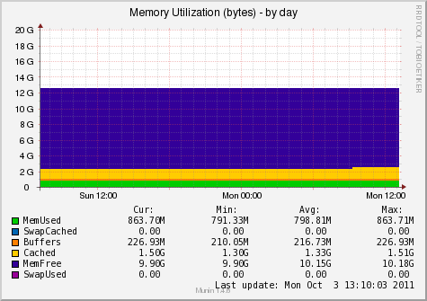

PyMunin Multigraph Munin Plugin for monitoring System Resources.
Load Average, CPU and Memory Utilization, Processes, Forks, Interrupts, Context Switches, Paging and Swapping etc.
The multigraph plugin implements the following graphs:
|  | |
| Variable | Description |
|---|---|
| include_graphs | Comma separated list of enabled graphs. (All graphs enabled by default.) |
| exclude_graphs | Comma separated list of disabled graphs. |